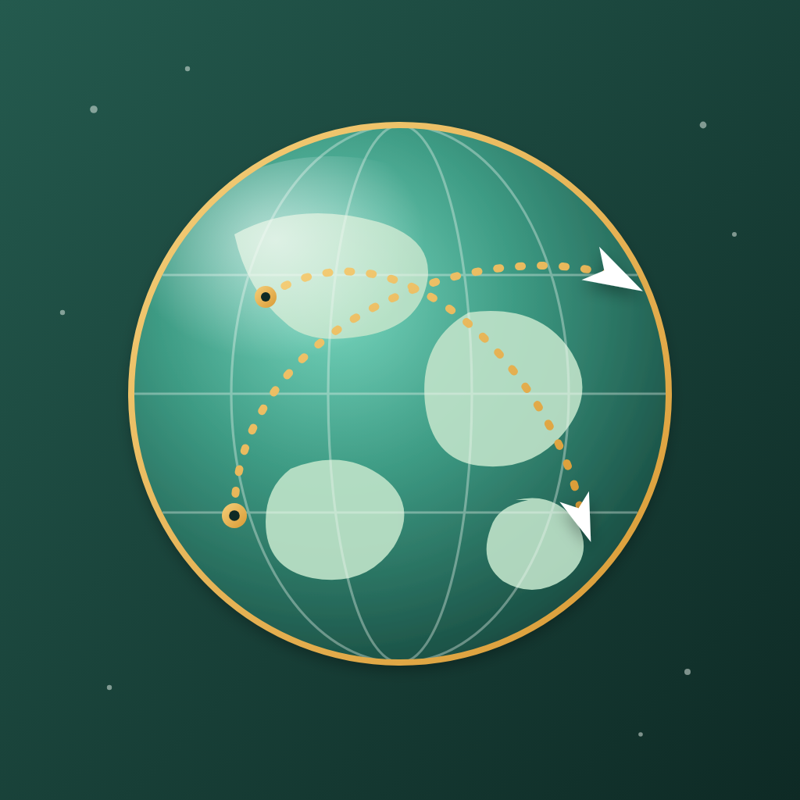
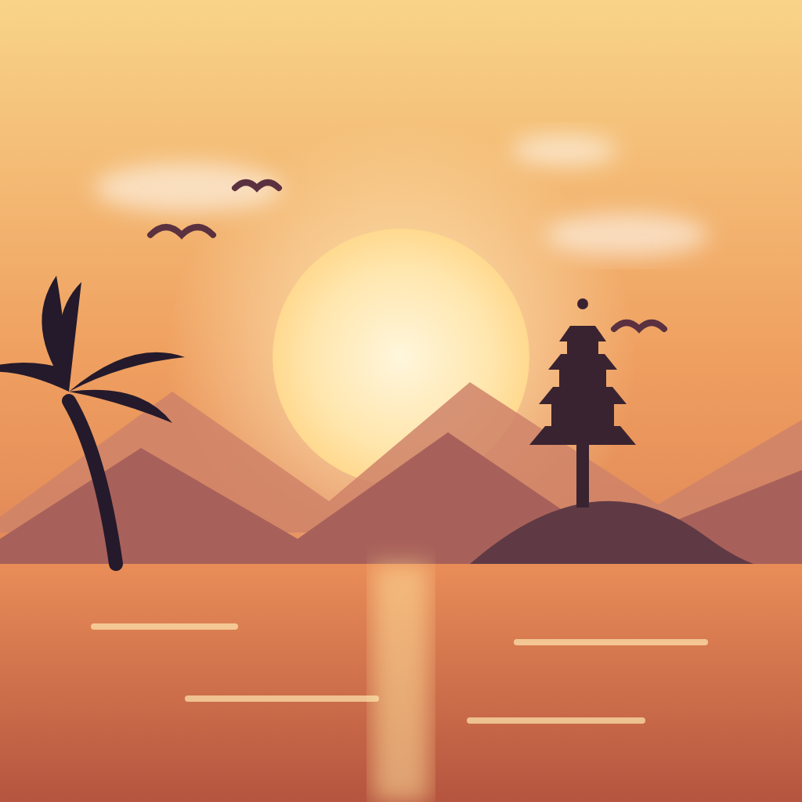
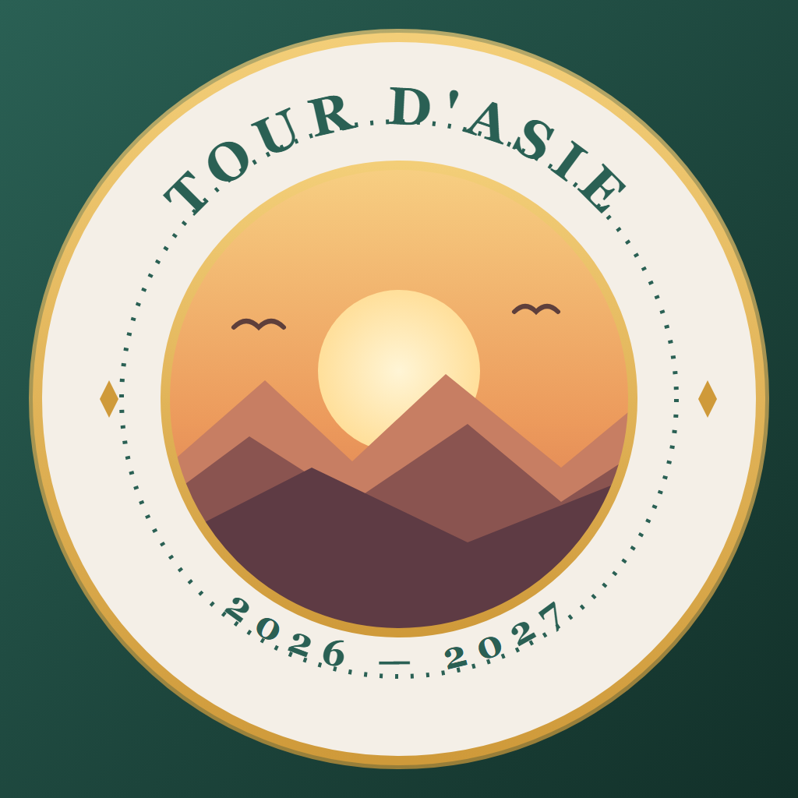

Cette fois, de vraies petites illustrations, plus riches. Regarde-les comme sur ton téléphone (coins arrondis). Dis-moi le numéro que tu préfères — et tout ce que tu veux ajuster (couleurs, éléments…).

1
🌍 Globe de voyage
planète, routes aériennes, avions

2
🌅 Scène d'Asie
montagnes, temple, palmier, mer

3
🎖️ Badge explorateur
écusson façon tampon de voyage
👉 Réponds-moi par le numéro (ex. « le 2 »). Tu peux aussi demander des variantes : « le 2 sans le palmier », « le 3 en bleu », « ajoute un avion au 1 »… Une fois calé, je le décline en haute qualité partout (accueil, onglet, connexion).